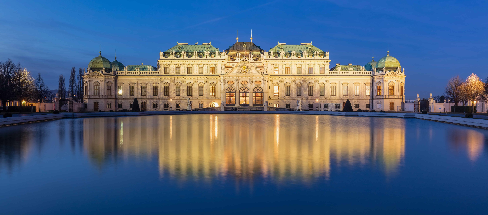
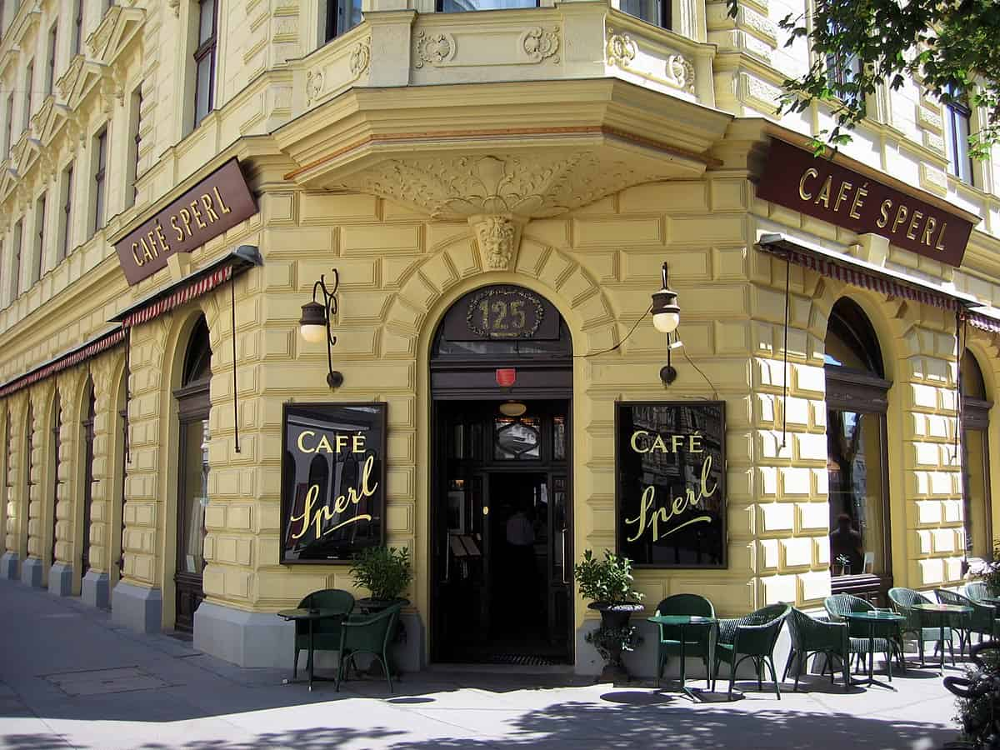
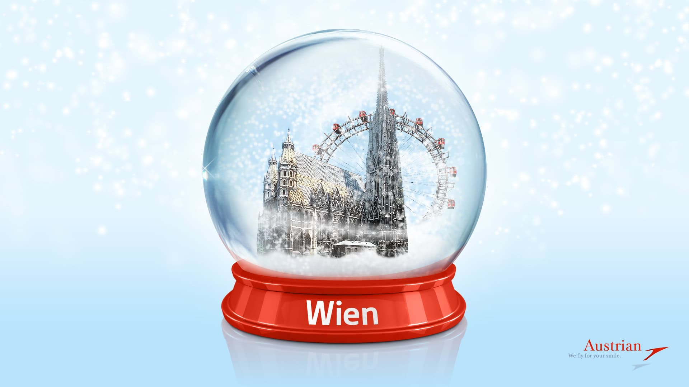
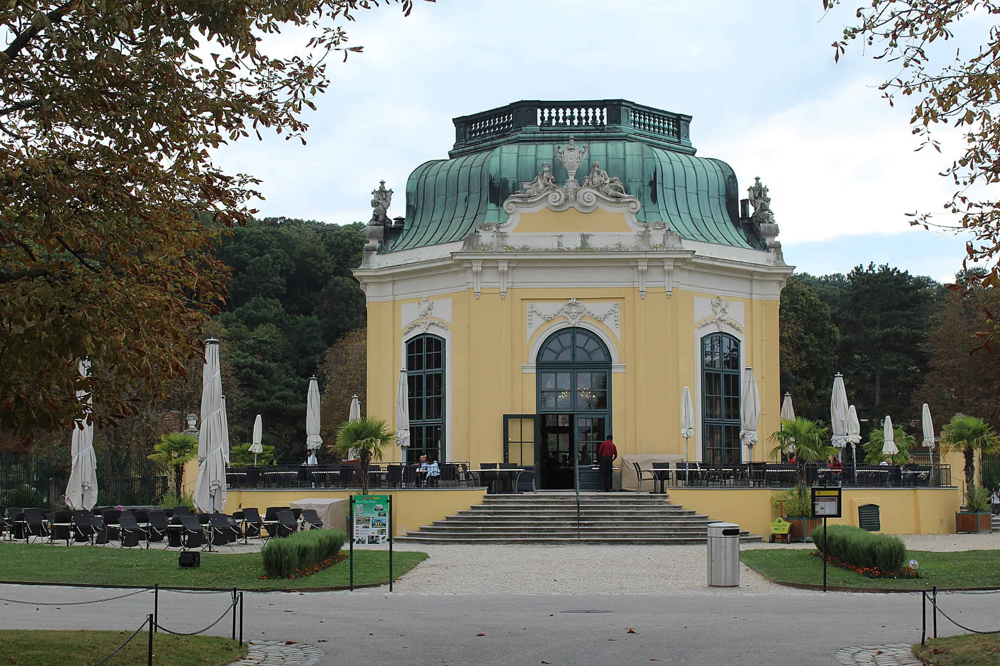
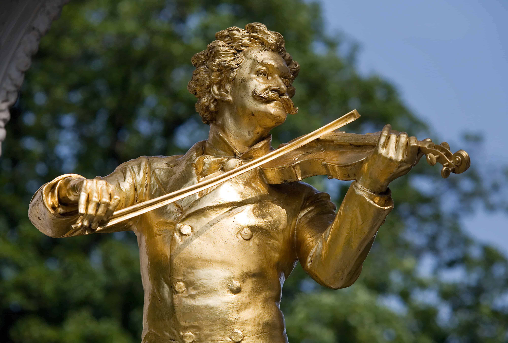

Five facts about the History of Vienna
1. Vienna was once the centre of a 700 year empire.

The Beating Heart of the Habsburg Empire
From the 13th century until the early 20th century, Vienna served as the political and cultural center of
the Habsburg Empire, which spanned much of Europe. The City became home to grand palaces, lavish balls
and legendary composers. Traces of this era can still be seen in the Hofburg Palace, Schonbrunn Palace
and the State Opera House.
2. The Viennese coffeehouse tradition began from unlikely origins

The "Public Living Rooms" of Vienna
After the failed Ottoman siege in 1683, the retreating army left behind sacks of coffee beans. A
Polish-Austrian officer, Jerzy Franciszek Kulczycki, supposedly used them to open one of Vienna’s first
coffeehouses, kick-starting the city’s legendary café culture. The coffeehouses quickly became a social
hub, where people gathered to discuss ideas, politics, and art. Patrons could linger for hours over a
single coffee, using the cafe as a second home. In 2011 UNESCO recognized the Viennese coffeehouse
culture as an Intangible Cultural Heritage.
3. The Snow Globe was Invented in Vienna by Accident

A Happy Accident
The snow globe was invented in Vienna by accident in 1900. A local mechanic was trying to create a
brighter surgical lamp by adding reflective particles to water but instead of improving the light he
accidentally created the magical swirling "snowing" effect. This whimsical creation quickly became a
popular souvenir and is now synonymous with the city. The Original Vienna Snow Globe Factory still
operates today, producing these enchanting keepsakes.
4. The World's First Zoo is in Vienna

Tiergarten Schönbrunn
Vienna is home to the world's oldest zoo, Tiergarten Schönbrunn, which was founded in 1752 by Emperor
Franz I, it was originally established as a royal menagerie, it is now a modern zoo that focuses on
conservation and education. The zoo is located on the grounds of the Schönbrunn Palace and is a popular
attraction for both locals and tourists. Today it is the world's oldest continuously operated zoo and a
UNESCO World Heritage Site.
5. The Blue Danube Waltz Premiered in Vienna in 1867

The Waltz that became Vienna's unoffical anthem
When Johann Strauss II first premiered An der schönen blauen Donau, it received polite but modest
applause. However, the waltz quickly captured international audiences and grew into one of the world’s
most iconic musical pieces. Today, it is inseparable from Vienna’s identity and is famously performed at
the annual New Year’s Concert.